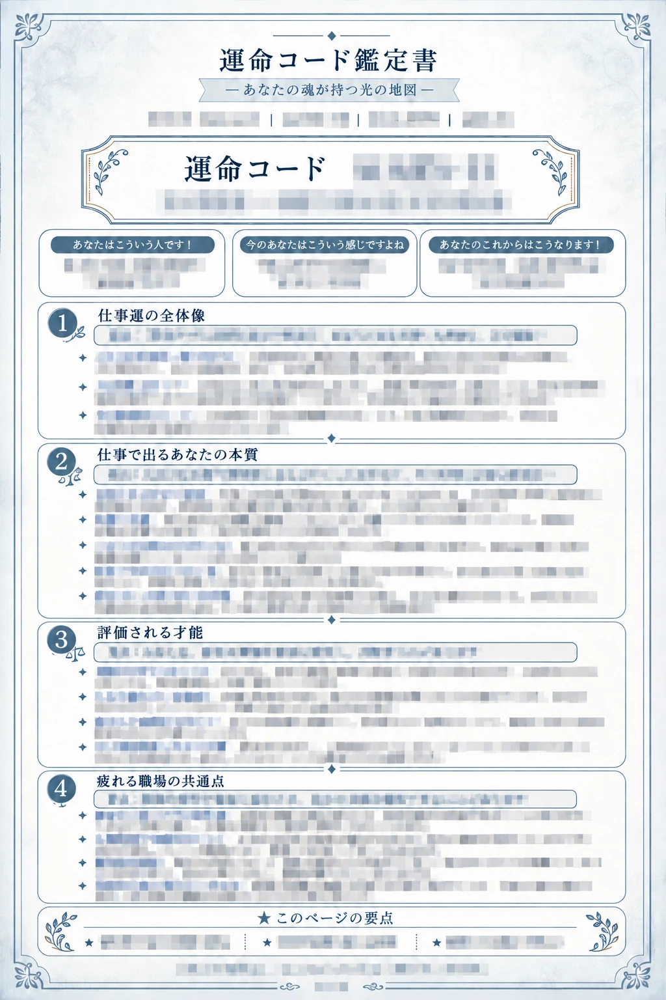
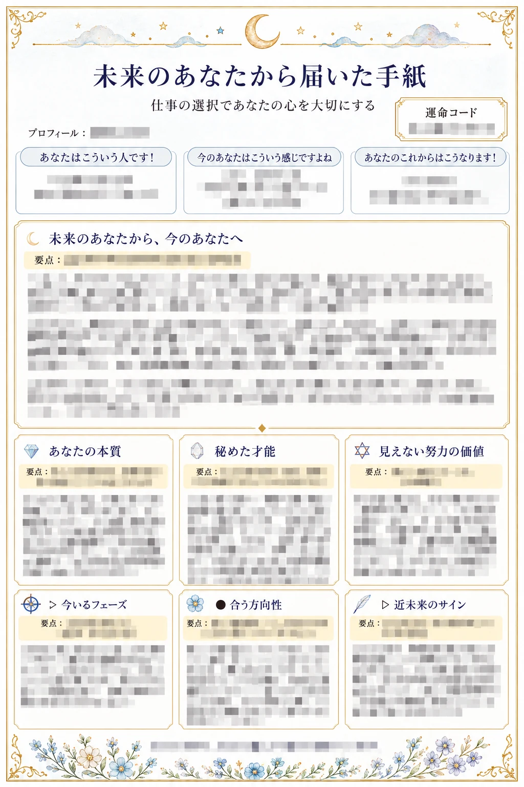
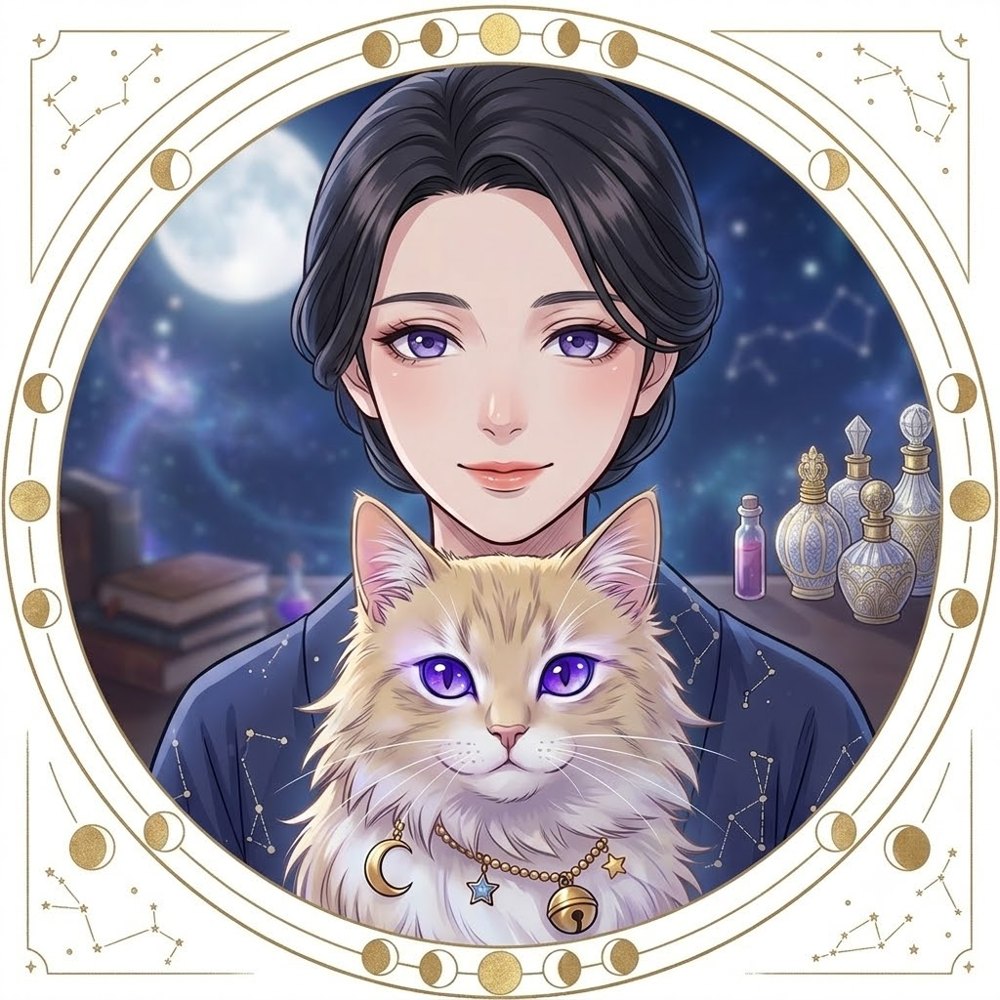
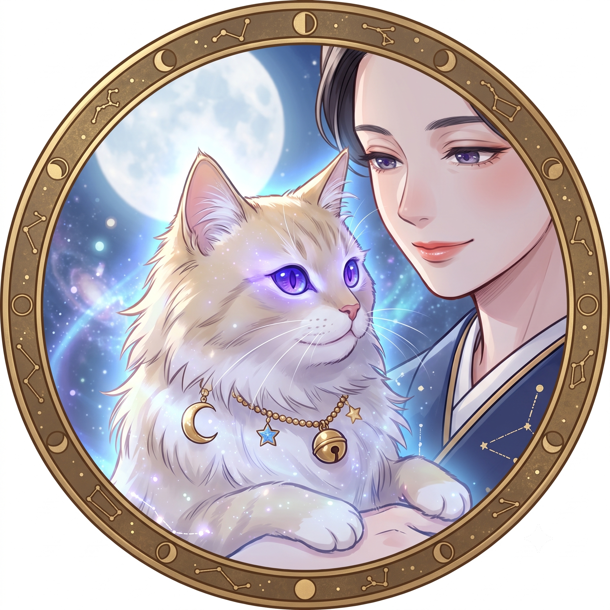

A LETTER FOR YOUR NEXT CHAPTER
静かな夜の鑑定師・未来（みくる）
迷う心に、
これからを選ぶ
小さな光を。
うまく言葉にできない気持ちも、そのままで。
生年月日とご相談から、あなたの今とこれからを読み解き、
読み返せる一冊の鑑定書にしてLINEへお届けします。


あなたのための言葉を、
いつでも見返せるかたちに。
A QUIET PLACE TO BEGIN
答えを急ぐ前に、
あなたの気持ちに
耳を澄ませる時間を。
これからの仕事。大切な人との関係。
今のままでいいのか、変わるならいつなのか。
みくるの占いは、あなたを一つの答えに閉じ込めるためのものではありません。今の自分を知り、これからの選び方を考えるための、小さな手がかりをお届けします。
ねこ神さまから届く小さなサインとともに、あなたのご相談を読み解きます。
実際の鑑定書の構成を見る ↓
MIKURU & THE LITTLE MOON GUIDE
みくるとねこ神さまの、
静かな鑑定室。
言えなかった本音も、まだ形になっていない願いも。
あなたの言葉を入口に、今の気持ちとこれからの流れを見つめます。
ねこ神さまから届く小さなサインを、
あなたのための鑑定書にしてお届けします。
01 / YOUR FIRST READING
まずは、無料の鑑定から。
今のあなたを知る入口として。
2ページの画像鑑定書をLINEで受け取れます。
あなたの本質・近未来のサイン・幸運のヒントを、一つの鑑定書に。
未来のあなたから届いた手紙
本質、秘めた才能、今のフェーズ、近未来のサインなど。
あなたに届く幸運のサイン
これから開く光、ラッキーカラーやアイテム、あなたへの言葉。
掲載画像は架空の仕事相談をもとにした構成例です。見出し以外の鑑定結果・プロフィール情報にモザイクをかけています。実際の内容はご相談によって変わります。
最初の一歩は、短いひと言から。
LINEで「占って」と送る ↗WHEN YOU WANT TO LOOK DEEPER
「この先」を、
もう少し詳しく知りたくなったら。
無料鑑定のあと、ご希望の方へ有料鑑定書をご案内します。
一年の流れから、今月の小さな一歩まで。
あなたのご相談を、7ページで深く読み解きます。
02 / A DEEPER PERSONAL READING
有料鑑定書、全7ページ。
気になるページだけでなく、
お届けする鑑定書をすべてご紹介します。
運命コード鑑定書。無料鑑定で伺った内容を引き継いで作成します。
あなたの本質と、秘めた力
運命コードから、相談テーマに表れる本質や才能を読み解きます。
あなたの問いに、もっと深く
ご相談へのメッセージと、話が動いた時・進まない時の考え方。
転機と、次の選び方
時期ごとの動き方と、立ち止まって確認したい目印を整理。
一年を見渡す、運勢カレンダー
仕事・恋愛・金運の流れと、月ごとのテーマや準備のヒント。
ご相談に合わせた、具体的なヒント
掲載例は仕事の相談。選ぶ場所や働き方、今日できることへ。
なりたい自分へ、一か月の一歩
四週間に分けたアクションと、日々を支える言葉をまとめます。
迷いをほどく、10の視点
気になるテーマを多角的に見つめ、次に確かめることを整理します。
全7ページの構成サンプルです。本文・数値・個別情報は非公開にしています。ご相談内容により見出しやデザインが変わる場合があります。
有料鑑定は、ご希望の方だけ。
まずは無料鑑定をお受け取りください。有料鑑定の料金・購入条件は、LINEのご案内と購入ページでご確認いただけます。
FROM YOUR FIRST MESSAGE TO YOUR READING
いつものLINEが、
あなたの鑑定室に。
ご相談も、鑑定書のお届けもLINEで。
新しいアプリを使い分ける必要はありません。
- 01
友だち追加して
「占って」と送るLINEに届く質問に沿って、生年月日やご相談内容をお送りください。
- 02
無料の鑑定書を
LINEで受け取るあなたの情報をもとに作成した、2ページの画像鑑定書をお届けします。
- 03
もっと知りたい時は
有料鑑定へLINEの案内から購入ページへ。購入コードを入力して決済後、LINEへ戻って追加のご相談を送ります。
- 04
7ページの鑑定書も
同じLINEへ購入確認・必要なヒアリング後に作成し、LINEでお届けします。保存して読み返せます。
※有料鑑定のお支払い時のみ、LINEで案内する外部の購入ページへ移動します。
QUESTIONS, GENTLY ANSWERED
はじめての方へ。
無料鑑定だけでも利用できますか？
はい。まずは無料鑑定をご利用いただけます。有料鑑定はご希望の方へご案内します。
どんな情報が必要ですか？
お名前、生年月日、出生地、ご相談内容などをLINEで伺います。出生時間やお相手の情報など、分からない項目は「不明」でお送りいただけます。
鑑定結果はどこに届きますか？
無料版・有料版ともに、画像の鑑定書をLINEへお届けします。このページに相談内容を入力するフォームはありません。
画像の文字が読めないのはなぜですか？
鑑定書の構成を紹介するため、見出し以外の結果や個別情報にモザイクをかけています。お届けするご本人用の鑑定書には、このモザイクはありません。
有料鑑定の料金や支払い方法は？
無料鑑定後のLINEの案内と、案内先の購入ページで最新の料金・お支払い方法・購入条件をご確認ください。

YOUR NEXT CHAPTER STARTS HERE
あなたの言葉から、
次の一ページを。
まずは「占って」のひと言を、みくるのLINEへ。
無料鑑定をLINEで始める ↗相談・鑑定書の受け取りはLINEで。まずは無料の2ページから。